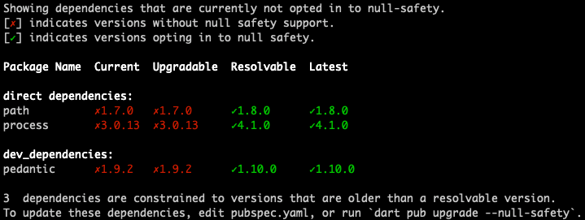

Migrating to null safety
This page describes how and when to migrate your code to null safety. Here are the basic steps for migrating each package that you own:
- Wait for the packages that you depend on to migrate.
- Migrate your package's code, preferably using the interactive migration tool.
- Statically analyze your package's code.
- Test to make sure your changes work.
- If the package is already on pub.dev, publish the null-safe version as a prerelease version.
To get an informal look at the experience of using the migration tool, watch this video:
How to migrate Dart packages to null safety
1. Wait to migrate
#We strongly recommend migrating code in order, with the leaves of the dependency graph being migrated first. For example, if package C depends on package B, which depends on package A, then A should be migrated to null safety first, then B, then C.
Although you can migrate before your dependencies support null safety, you might have to change your code when your dependencies migrate. For example, if you predict that a function will take a nullable parameter but the package migrates it to be non-nullable, then passing a nullable argument becomes a compile error.
This section tells you how to check and update your package's dependencies, with the help of the dart pub outdated command in null-safety mode. The instructions assume your code is under source control, so that you can easily undo any changes.
Switch to the Dart 2.19.6 release
#Switch to the 2.19.6 release of the Dart SDK. This is included in the Flutter 3.7.12 SDK.
Check that you have Dart 2.19.6:
$ dart --version
Dart SDK version: 2.19.6Check dependency status
#Get the migration state of your package's dependencies, using the following command:
$ dart pub outdated --mode=null-safetyIf the output says that all the packages support null safety, then you can start migrating. Otherwise, use the Resolvable column to find null-safe releases, if they exist.
Here's an example of the output for a simple package. The green checkmarked version for each package supports null safety:

The output shows that all of the package's dependencies have resolvable prereleases that support null safety.
If any of your package's dependencies don't yet support null safety, we encourage you to reach out to the package owner. You can find contact details on the package page on pub.dev.
Update dependencies
#Before migrating your package's code, update its dependencies to null-safe versions:
Run
dart pub upgrade --null-safetyto upgrade to the latest versions supporting null safety. Note: This command changes yourpubspec.yamlfile.Run
dart pub get.
2. Migrate
#Most of the changes that your code needs to be null safe are easily predictable. For example, if a variable can be null, its type needs a ? suffix. If a named parameter shouldn't be nullable, mark it required or give it a default value.
You have two options for migrating:
- Use the migration tool, which can make most of the easily predictable changes for you.
- Migrate your code by hand.
Using the migration tool
#The migration tool takes a package of null-unsafe Dart code and converts it to null safety. You can guide the tool's conversion by adding hint markers to your Dart code.
Before starting the tool, make sure you're ready:
- Use the 2.19.6 release of the Dart SDK.
- Use
dart pub outdated --mode=null-safetyto make sure that all dependencies are null safe and up-to-date.
Start the migration tool by running the dart migrate command in the directory that contains the package's pubspec.yaml file:
$ dart migrateIf your package is ready to migrate, then the tool produces a line like the following:
View the migration suggestions by visiting:
http://127.0.0.1:60278/Users/you/project/mypkg.console-simple?authToken=Xfz0jvpyeMI%3DVisit that URL in a Chrome browser to see an interactive UI where you can guide the migration process:
For every variable and type annotation, you can see what nullability the tool infers. For example, in the preceding screenshot, the tool infers that the ints list (previously a list of int) in line 1 is nullable, and thus should be a list of int?.
Understanding migration results
#To see the reasons for each change (or non-change), click its line number in the Proposed Edits pane. The reasons appear in the Edit Details pane.
For example, consider the following code, from before null safety:
var ints = const <int>[0, null];
var zero = ints[0];
var one = zero + 1;
var zeroOne = <int>[zero, one];The default migration when this code is outside a function (it's different within a function) is backward compatible but not ideal:
var ints = const <int?>[0, null];
var zero = ints[0];
var one = zero! + 1;
var zeroOne = <int?>[zero, one];By clicking the line 3 link, you can see the migration tool's reasons for adding the !. Because you know that zero can't be null, you can improve the migration result.
Improving migration results
#When analysis infers the wrong nullability, you can override its proposed edits by inserting temporary hint markers:
In the Edit Details pane of the migration tool, you can insert hint markers using the Add
/*?*/hint and Add/*!*/hint buttons.These buttons add comments to your file immediately, and there's no Undo. If you don't want a hint that the tool inserted, you can use your usual code editor to remove it.
You can use an editor to add hint markers, even while the tool is still running. Because your code hasn't opted into null safety yet, you can't use new null-safety features. You can, however, make changes like refactoring that don't depend on null-safety features.
When you've finished editing your code, click Rerun from sources to pick up your changes.
The following table shows the hint markers that you can use to change the migration tool's proposed edits.
| Hint marker | Effect on the migration tool |
|---|---|
expression /!/ | Adds a ! to the migrated code, casting expression to its underlying non-nullable type. |
type /!/ | Marks type as non-nullable. |
/*?*/ | Marks the preceding type as nullable. |
/*late*/ | Marks the variable declaration as late, indicating that it has late initialization. |
/*late final*/ | Marks the variable declaration as late final, indicating that it has late, one-time initialization. |
/*required*/ | Marks the parameter as required. |
A single hint can have ripple effects elsewhere in the code. In the example from before, manually adding a /*!*/ marker where zero is assigned its value (on line 2) makes the migration tool infer the type of zero as int instead of int?. This type change can affect code that directly or indirectly uses zero.
var zero = ints[0]/*!*/;With the above hint, the migration tool changes its proposed edits, as the following code snippets show. Line 3 no longer has a ! after zero, and in line 4 zeroOne is inferred to be a list of int, not int?.
| First migration | Migration with hint |
|---|---|
dart | dart |
Opting out files
#Although we recommend migrating all at once, sometimes that isn't practical, especially in a large app or package. To opt out a file or directory, click its green checkbox. Later, when you apply changes, each opted out file will be unchanged except for a 2.9 version comment.
For more information about incremental migration, see Unsound null safety.
Note that only fully migrated apps and packages are compatible with Dart 3.
Applying changes
#When you like all of the changes that the migration tool proposes, click Apply migration. The migration tool deletes the hint markers and saves the migrated code. The tool also updates the minimum SDK constraint in the pubspec, which opts the package into null safety.
The next step is to statically analyze your code. If it's valid, then test your code. Then, if you've published your code on pub.dev, publish a null-safe prerelease.
Migrating by hand
#If you prefer not to use the migration tool, you can migrate manually.
We recommend that you first migrate leaf libraries—libraries that don't import other files from the package. Then migrate libraries that directly depend on the leaf libraries. End by migrating the libraries that have the most intra-package dependencies.
For example, say you have a lib/src/util.dart file that imports other (null-safe) packages and core libraries, but that doesn't have any import '<local_path>' directives. Consider migrating util.dart first, and then migrating simple files that depend only on util.dart. If any libraries have cyclic imports (for example, A imports B which imports C, and C imports A), consider migrating those libraries together.
To migrate a package by hand, follow these steps:
Edit the package's
pubspec.yamlfile, setting the minimum SDK constraint to at least2.12.0:yamlenvironment: sdk: '>=2.12.0 <3.0.0'Regenerate the package configuration file:
$ dart pub getRunning
dart pub getwith a lower SDK constraint of at least2.12.0sets the default language version of every library in the package to a minimum of 2.12, opting them all in to null safety.Open the package in your IDE.
You're likely to see a lot of analysis errors. That's OK.Migrate the code of each Dart file, using the analyzer to identify static errors.
Eliminate static errors by adding?,!,required, andlate, as needed.
See Unsound null safety for more help on migrating code by hand.
3. Analyze
#Update your packages (using dart pub get in your IDE or on the command line). Then use your IDE or the command line to perform static analysis on your code:
$ dart pub get
$ dart analyze # or `flutter analyze`4. Test
#If your code passes analysis, run tests:
$ dart test # or `flutter test`You might need to update tests that expect null values.
If you need to make large changes to your code, then you might need to remigrate it. If so, revert your code changes before using the migration tool again.
5. Publish
#We encourage you to publish packages—possibly as prereleases—as soon as you migrate:
- Set the package version to indicate a breaking change.
- Update the SDK constraints and package dependencies.
- Publish the package. If you don't consider this version to be a stable release, then publish the package as a prerelease.
Update the package version
#Update the version of the package to indicate a breaking change:
If your package is already at
1.0.0or greater, increase the major version. For example, if the previous version is2.3.2, the new version is3.0.0.If your package hasn't reached
1.0.0yet, either increase the minor version or update the version to1.0.0. For example, if the previous version is0.3.2, the new version is either0.4.0or1.0.0.
Check your pubspec
#Before you publish a stable null safety version of a package, we strongly recommend following these pubspec rules:
- Set the Dart lower SDK constraint to the lowest stable version that you've tested against (at least
2.12.0). - Use stable versions of all direct dependencies.
Welcome to null safety
#If you made it this far, you should have a fully migrated, null-safe Dart package.
If all of the packages you depend on are migrated too, then your program is sound with respect to null-reference errors. You should see output like this when running or compiling your code:
Compiling with sound null safetyFrom all of the Dart team, thank you for migrating your code.
Unless stated otherwise, the documentation on this site reflects Dart 3.6.0. Page last updated on 2024-12-10. View source or report an issue.